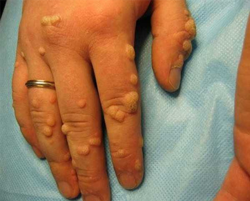

Σύμφωνα με στοιχεία του ΠΟΥ, η συχνότητα των παρασιτικών λοιμώξεων
έχει αυξηθεί κατά 17,6% το 2019. Αξιοσημείωτο είναι ότι αυτοί οι αριθμοί περιλαμβάνουν, όχι
μόνο τις αναπτυσσόμενες χώρες, αλλά και την εύπορη Ευρώπη.
Οι έλμινθες είναι τόσο διαδεδομένες, επειδή οι ασθενείς δεν εμφανίζουν
συμπτώματα στα πρώιμα στάδια. Ένα μολυσμένο άτομο μπορεί να μην γνωρίζει ότι έχει μολυνθεί
κι έτσι να μολύνει κι άλλους ανθρώπους.
Γιατι οι ελμινθες είναι επικινδυνοι;
Υπάρχουν πάνω από 360 γνωστά είδη έλμινθων. Τα περισσότερα από αυτά
ζουν στο έντερο ή το συκώτι, αλλά μερικά μπορούν να μετακινούνται σε άλλα όργανα και
συστήματα: πνεύμονες, καρδιά, κεντρικό νευρικό σύστημα, μυς, βολβοί ματιών και εγκέφαλος.
Συνέπειες των παρασιτικών λοιμώξεων:
Ανάπτυξη αναιμίας, αβιταμίνωσης και ανορεξία
Βλάβη σε ιστούς και όργανα. Αυξημένος κίνδυνος για ανάπτυξη
μολύνσεων και φόρτωση του αίματος με τοξίνες
Παθολογίες του νευρικού συστήματος. Οι παρασιτικές τοξίνες
προκαλούν ημικρανία, ευερεθιστότητα, νευρική κατάρρευση, καρδιακό επεισόδιο και
έμφραγμα.
Αλλεργική αντίδραση (εξανθήματα, φαγούρα, σκασίματα και πληγές)
Ανάπτυξη θηλωμάτων που προκαλούν καρκίνο
Καθυστέρηση της ανάπτυξης των παιδιών, επικίνδυνες επιπλοκές
Μπορεί να προκαλέσουν ανικανότητα στους άνδρες
Μπορούν να προκαλέσουν μείωση της γονιμότητας στις γυναίκες
Μην αγνοεις το προβλημα!
Ετσι μολυνεσαι από τα παρασιτα
Η ιδέα ότι μπορείς να μολυνθείς μόνο μέσω των τροφών ή του νερού
αποτελεί στερεότυπο. Τα παράσιτα μπορούν να εισέλθουν στο σώμα σου μέσω του δέρματος. Για
παράδειγμα, όταν χρησιμοποιείς τις δημόσιες συγκοινωνίες ή τις τουαλέτες.
Οι προνύμφες του έλμινθα εισέρχονται στα τριχοειδή αγγεία μέσω των
πόρων και εξαπλώνονται σε όλο σου το σώμα με την κυκλοφορία του αίματος. Δεν θα νιώσεις
κάποιο τσίμπημα, οπότε θα είναι δύσκολο να καταλάβεις ότι έχεις μολυνθεί. Ακόμα, ζώα και
έντομα μπορούν να προκαλέσουν παρασιτικές μολύνσεις όταν εισπνέεις μικροσκοπικά ελμινθικά
αυγά με τη σκόνη.
TOP 3 ΜΕΘΟΔΟΙ ΓΙΑ ΤΗΝ
ΚΑΤΑΠΟΛΕΜΗΣΗ ΤΩΝ ΠΑΡΑΣΙΤΩΝ
ΑΝΤΙ-ΠΑΡΑΣΙΤΙΚΗ ΔΙΑΙΤΑ
- Τσέκαρε την ποιότητα των τροφών που καταναλώνεις: μην τρως άπλυτα
λαχανικά, φρούτα και βότανα, θερμικά μη επεξεργασμένο κρέας (ωμό κρέας), ωμό ψάρι (σούσι,
σασίμι) και άβραστο γάλα.
- Κατανάλωνε λιγότερα γλυκά και ζάχαρη - ενισχύουν την ανάπτυξη
παθογόνας μικροχλωρίδας στο έντερο.
ΜΗΝ ΞΕΧΝΑΣ ΤΟΥΣ ΚΑΝΟΝΕΣ ΠΡΟΣΩΠΙΚΗΣ ΥΓΙΕΙΝΗΣ
Στο σύγχρονο κόσμο, είναι δύσκολο να αποφύγεις να αγγίζεις διάφορες
επιφάνειες στα μέσα μεταφοράς, να χρησιμοποιείς πιάτα και ποτήρια στους χώρους εστίασης ή να
χρησιμοποιείς δημόσιες τουαλέτες. Απλώς ακολούθησε μερικούς απλούς κανόνες: πλύνε τα χέρια
σου τακτικά και μην αγγίζεις το πρόσωπό σου.
ΑΠΟΤΟΞΙΝΩΣΗ
Για να απομακρύνεις τα παράσιτα και τις τοξίνες τους από το σώμα σου,
πρέπει να υποβληθείς σε μια διαδικασία αποτοξίνωσης με ένα αντιπαρασιτικό προϊόν - το .
Αυτό το προϊόν είναι πολύ αποτελεσματικό, δεν έχει αντενδείξεις ή
παρενέργειες. Η δράση του στοχεύει στη δημιουργία αντίξοων συνθηκών για τα παράσιτα, που θα
τους κάνει να χάσουν το ενδιαφέρον τους για αναπαραγωγή και να τα αποδυναμώσει, ώστε να
γίνει πιο εύκολα η απομάκρυνση των παρασίτων από το σώμα.
Η φόρμουλα του περιλαμβάνει εκχυλίσματα
φυτών (αρτεμισία, κουρκουμάς, ασιατική σεντέλα, ινδικό φραγκοστάφυλο, σέλινο), τα
οποία έχουν ισχυρό αντιπαρασιτικό αποτέλεσμα:
Παραλύουν τα παράσιτα
Ενισχύει την εκροή της χολής, βοηθώντας έτσι να απομακρύνεις
τα παραλυμένα παράσιτα, τις προνύμφες και τα αυγά τους.
Αποκαθιστά τους προσβεβλημένους ιστούς και τη χλωρίδα του
εντέρου, βοηθώντας έτσι στη βελτίωση του ανοσοποιητικού συστήματος και στη
διακοπή της αυξομείωσης του βάρους.
Δημιουργεί ένα υγιές, αλκαλικό περιβάλλον στο έντερο,
εμποδίζοντας μια επαναμόλυνση.
Σύμφωνα με τα αποτέλεσμα μιας ανώνυμης δημοσκόπησης:
98% των μολυσμένων ατόμων απαλλάσσονται εντελώς από τα παράσιτα
89% αναφέρουν βελτίωση της υγείας
75% λαμβάνουν το για προληπτικούς
λόγους και είναι ικανοποιημένοι με τα αποτελέσματα
Πολλοί άνθρωποι συνήθως αγνοούν την αδιαθεσία. Μπορεί να μην έχεις
ιδέα, αλλά είναι 97-98% πιθανό ότι τα παράσιτα κατοικούν στο σώμα σου. Οι προνύμφες τους
μπορεί να βρίσκονται οπουδήποτε - στο αίμα, στο έντερο, στους πνεύμονες, στον προστάτη, στην
καρδιά ή στον εγκέφαλο.
Να γίνεις φορέας παρασίτων είναι ευκολότερο κι από το να φας ένα
χάμπουργκερ. Αρκεί να πλύνεις τα χέρια σου με λάθος τρόπο πριν το φαγητό, να φιλήσεις
κάποιο μολυσμένο άτομο ή να παίξεις με κάποιο κατοικίδιο. Συμβουλεύω να ακολουθήσεις ένα
πρόγραμμα χρήσης του πριν τα παράσιτα να
κάνουν ανεπανόρθωτη ζημιά.
Ο παρασκευαστής προσφέρει το προϊόν σε ειδική
τιμή για τους αναγνώστες μας. Ο αριθμός των διαθέσιμων τεμαχίων με έκπτωση 50% είναι
περιορισμένος.
Νομιζεις οτι τα παρασιτα μπορουν να τους σκοτωσουν ολους εκτος απο
σενα; ΟΛΟΚΛΗΡΩΣΕ ΜΙΑ ΕΡΕΥΝΑ-ΕΞΠΡΕΣ ΓΙΑ ΝΑ ΜΑΘΕΙΣ ΑΝ ΕΧΕΙΣ ΜΟΛΥΝΘΕΙ Ή ΟΧΙ:
Υποφέρεις από εντερικές διαταραχές;
Δεν μπορείς να απαλλαγείς από τους μαύρους κύκλους κάτω από τα μάτια, τις αλλεργίες
και τα εξανθήματα;
Υποφέρεις από πόνο στις αρθρώσεις και τους μυς χωρίς να ξέρεις το γιατί;
Υποφέρεις από κόπωση, ημικρανία ή αϋπνία;
Τρίζεις τα δόντια σου;
Χάνεις ή παίρνεις κιλά χωρίς λόγο;
ΑΚΟΜΑ ΚΑΙ ΕΝΑ ''ΝΑΙ'' ΕΙΝΑΙ Ο ΛΟΓΟΣ ΓΙΑ ΝΑ ΑΝΗΣΥΧΗΣΕΙΣ ΚΑΙ
ΝΑ ΑΡΧΙΣΕΙΣ ΝΑ ΠΑΙΡΝΕΙΣ ΤΟ
Κοινοποίηση:
ΣΥΝΤΑΚΤΗΣ ΤΟΥ ΑΡΘΡΟΥ:
Γιάννης Παπαλέξης
Παρασιτολόγος - Λοιμωξιολόγος Εργασιακή εμπειρία: 17
χρόνια Συγγραφέας βιβλίων λοιμωξιολογίας
ΣΧΟΛΙΑ:
Βίκυ
Είναι απαίσιο!!! Αποδεικνύεται ότι μπορεί να ζεις χωρίς
να ξέρεις ότι αυτά είναι μέσα σου! Τα φοβάμαι τόσο πολύ που πλένω τα χέρια μου
30 φορές τη μέρα! Θα παραγγείλω σίγουρα αυτό το προϊόν. Ευχαριστώ για τις
συμβουλές!
Κάναμε μια ειλικρινή συζήτηση και... μπορώ να εξομολογηθώ
ότι η οικογένειά μου έχει το ίδιο πρόβλημα. Αλλά γνωρίζω το εδώ και πολύ καιρό, το
χρησιμοποιεί η αδερφή μου. Έτσι ξεκινήσαμε να το παίρνουμε αμέσως και γίναμε
υγιείς γρήγορα. Συμφωνώ απόλυτα με τον ειδικό που έγραψε το θέμα, πρέπει
οπωσδήποτε να λάβετε μέτρα πρόληψης.
Αγαπητή μου, φαίνεται ότι δεν έχετε αντιμετωπίσει ποτέ το
πρόβλημα της μόλυνσης από έλμινθες, αλλιώς δεν θα τα λέγατε αυτά. Πρέπει να
γνωρίζετε ότι είναι δύσκολο να καταλάβει κάποιος ότι έχει μολυνθεί. Πολλοί
άνθρωποι το αγνοούν για χρόνια.
Το έσωσε και
τη δική μου οικογένεια. Ο γιος μου έφερε στο σπίτι ένα αδέσποτο κουτάβι και με
το σύζυγό μου συμφωνήσαμε να το κρατήσει. Ποιος ήξερε ότι αυτό το κουτάβι θα
έφερνε τόσα πολλά προβλήματα... Ο άνδρας μου ήταν ο πρώτος που παρουσίασε τα
συμπτώματα. Ο γιος μου ήταν ο επόμενος. Κατάλαβα από την αρχή ότι δεν ήταν
κάποιο κρύωμα. Κάναμε μερικές εξετάσεις και ανακαλύψαμε ότι μολυνθήκαμε με
παράσιτα. Υποφέραμε για 2 εβδομάδες προσπαθώντας να τα ξεφορτώθουμε με
γιατροσόφια. Αυτό είναι βλακεία! Αλλά μόλις ξεκινήσαμε να παίρνουμε το αντιπαρασιτικό προϊόν, αρχίσαμε να νιώθουμε
πολύ καλύτερα. Οι εμετοί και το φούσκωμα σταμάτησαν μετά από μία μέρα. Μια
εβδομάδα μετά κάναμε ξανά εξετάσεις και βρήκαμε ότι είμαστε πλέον υγιείς.
Σωστά, μπορείς να μολυνθείς στο γραφείο ή στο
ταχυδρομείο, όταν χρησιμοποιείς τα μεταφορικά μέσα, ακόμα και μέσω του φαγητού.
Για παράδειγμα, ο άνδρας μου λατρεύει το μισοψημένο κρέας, γι' αυτό δεν
σταματάμε ποτέ να χρησιμοποιούμε αντιπαρασιτικά προϊόντα. Συν Αθηνά και χείρα
κίνει. Θα παραγγείλω το για μας.
Συνιστώ σε όλους όσους έχουν προβλήματα με τα θηλώματα να
χρησιμοποιούν αυτό το προϊόν. Τα χέρια μου ήταν καλυμμένα με θηλώματα μέχρι τους
αγκώνες. Φοβόμουν τόσο πολύ τον καρκίνο. Καμία θεραπεία δεν μπορούσε να
βοηθήσει. Τα αντιβιοτικά δεν είχαν αποτέλεσμα. Τα θηλώματα έγιναν μικρότερα,
αλλά μετά εμφανίστηκαν ξανά και βρήκα κάποια στα πόδια μου. Έχω περάσει τόσα
πολλά... δεν θα το ευχόμουν ούτε στο χειρότερο εχθρό μου. Πέρασα 8 μήνες
κλεισμένη στο σπίτι, έπρεπε να σταματήσω τη δουλειά μου και να αποφεύγω να
συναντιέμαι με τα αγαπημένα μου πρόσωπα γιατί δεν ήθελα να τους τρομάξω ή να
τους μολύνω… Ήταν απαίσιο. Ευτυχώς, αυτά είναι τα πράγματα που ανήκουν στο
παρελθόν πλέον. Ήμουν τυχερή που ανακάλυψα το
. Το έπαιρνα για 3 εβδομάδες και μετά είδα το αποτέλεσμα - όλο
και περισσότερα θηλώματα εξαφανιζόντουσαν μέρα με τη μέρα. Τα ξεφορτώθηκα, αλλά
θα συνεχίσω να παίρνω αυτό το προϊόν για πρόληψη. Δεν θέλω να τα ξαναπεράσω όλα
αυτά. Αρκετά.
Το είναι καλό
προϊόν, μπορώ να το πω αυτό με την ιδιότητά μου ως γιατρός. Είναι κρίμα που
υπάρχει μόνο μια ιστοσελίδα για να το αγοράσετε! Το συνιστώ σε πολλούς από τους
ασθενείς μου και τους λέω να το παραγγείλουν μόνο από τον επίσημο παρασκευαστή,
αλλά μερικοί αγοράζουν από όπου να 'ναι και μετά παραπονιούνται ότι δεν βλέπουν
αποτέλεσμα.
Τόσοι πολλά είδη παρασίτων παραμένουν άγνωστα για την
επιστήμη, αλλά οι άνθρωποι υποφέρουν εδώ και αιώνες εξαιτίας αυτών. Άκουσα ότι
υπάρχουν 19 τύποι παρασίτων που μπορούν ακόμη και να σε σκοτώσουν. Πρέπει να
τους σκοτώσουμε με διάφορα προϊόντα και αντιβιοτικά.
Μαζέψαμε ένα γάτο στο σπίτι, τον κάναμε μπάνιο, δεν
αφήναμε να ανεβαίνει σε κρεβάτια και καναπέδες. Αλλά ξεχάσαμε να κάνουμε τεστ
για παράσιτα και τελικά κολλήσαμε. Είχαμε σπυράκια και νιώθαμε άρρωστοι. Τα
αντιβιοτικά δεν είχαν κανένα αποτέλεσμα. Θα παραγγείλω σίγουρα το προϊόν.
Τα αντιβιοτικά δεν θα βοηθήσουν να απαλλαγείτε από τα
παράσιτα ή τους έλμινθες, είναι θεραπείες ευρέως φάσματος. Σε αυτή την
περίπτωση, χρειάζεστε ένα προϊόν που στοχεύει τα παράσιτα, ένα προϊόν που
καταστέλλει τη δραστηριότητά τους. Για παράδειγμα, μπορείτε να χρησιμοποιήσετε
το . Τα αντιπαρασιτικά προϊόντα
απλώς διαλύουν αυτά τα πλάσματα και τα απομακρύνουν από το σώμα με φυσικό τρόπο.
Σας ευχαριστώ, όσον αφορά τα αντιβιοτικά, είναι
ξεκάθαρο. Ο γιατρός μου λέει ότι αυτά δεν έχουν καμία επίδραση στα
παράσιτα, μόνο καταστρέφουν τη χλωρίδα και μπορεί ακόμα να βοηθούν τα
παράσιτα να πολλαπλασιαστούν!
Γεια σε όλους. Χάρηκα πολύ που βρήκα κάτι που
επιβεβαιώνει τις υποψίες μου. Ο άντρας μου και αυτός έκανε παράπονα για διάρροια
και πονοκεφάλους. Νόμιζα ότι πρόκειται για δηλητηρίαση αλλά κανένα χάπι δεν
μπορούσε να βοηθήσει. Τα συμπτώματα δεν εξαφανίστηκαν. Επιπλέον, παρατήρησα ότι
η σεξουαλική αντοχή του συζύγου μου δεν ήταν πια καλή. Στην πραγματικότητα, ήταν
πολύ χειρότερη. Τότε βρήκα αυτό το άρθρο. Παράγγειλα αυτό το αντιπαρασιτικό
προϊόν - το - αμέσως και την
τέταρτη μέρα ο άντρας μου είπε ότι τα συμπτώματα εξαφανίστηκαν. Το συνιστώ
ανεπιφύλακτα.


ΣΧΟΛΙΑ:
Βίκυ
Είναι απαίσιο!!! Αποδεικνύεται ότι μπορεί να ζεις χωρίς να ξέρεις ότι αυτά είναι μέσα σου! Τα φοβάμαι τόσο πολύ που πλένω τα χέρια μου 30 φορές τη μέρα! Θα παραγγείλω σίγουρα αυτό το προϊόν. Ευχαριστώ για τις συμβουλές!
ΑπάντησηΚατερίνα
Κάναμε μια ειλικρινή συζήτηση και... μπορώ να εξομολογηθώ ότι η οικογένειά μου έχει το ίδιο πρόβλημα. Αλλά γνωρίζω το εδώ και πολύ καιρό, το χρησιμοποιεί η αδερφή μου. Έτσι ξεκινήσαμε να το παίρνουμε αμέσως και γίναμε υγιείς γρήγορα. Συμφωνώ απόλυτα με τον ειδικό που έγραψε το θέμα, πρέπει οπωσδήποτε να λάβετε μέτρα πρόληψης.
ΑπάντησηΈλενα
Πρέπει απλώς να πλένετε τα χέρια σας!
ΑπάντησηΆννα
Αγαπητή μου, φαίνεται ότι δεν έχετε αντιμετωπίσει ποτέ το πρόβλημα της μόλυνσης από έλμινθες, αλλιώς δεν θα τα λέγατε αυτά. Πρέπει να γνωρίζετε ότι είναι δύσκολο να καταλάβει κάποιος ότι έχει μολυνθεί. Πολλοί άνθρωποι το αγνοούν για χρόνια.
ΑπάντησηΑλεξάνδρα
Έχω τρομερό άγχος για την υγεία μου! Μπορώ ήδη να δω ότι έχω συμπτώματα. Θα παραγγείλω αυτό το προϊόν για προληπτικούς σκοπούς αμέσως.
ΑπάντησηΣτέλλα
Το έσωσε και τη δική μου οικογένεια. Ο γιος μου έφερε στο σπίτι ένα αδέσποτο κουτάβι και με το σύζυγό μου συμφωνήσαμε να το κρατήσει. Ποιος ήξερε ότι αυτό το κουτάβι θα έφερνε τόσα πολλά προβλήματα... Ο άνδρας μου ήταν ο πρώτος που παρουσίασε τα συμπτώματα. Ο γιος μου ήταν ο επόμενος. Κατάλαβα από την αρχή ότι δεν ήταν κάποιο κρύωμα. Κάναμε μερικές εξετάσεις και ανακαλύψαμε ότι μολυνθήκαμε με παράσιτα. Υποφέραμε για 2 εβδομάδες προσπαθώντας να τα ξεφορτώθουμε με γιατροσόφια. Αυτό είναι βλακεία! Αλλά μόλις ξεκινήσαμε να παίρνουμε το αντιπαρασιτικό προϊόν, αρχίσαμε να νιώθουμε πολύ καλύτερα. Οι εμετοί και το φούσκωμα σταμάτησαν μετά από μία μέρα. Μια εβδομάδα μετά κάναμε ξανά εξετάσεις και βρήκαμε ότι είμαστε πλέον υγιείς.
ΑπάντησηΛένια
Γιατί κάποιος να ποστάρει ιστορίες σαν αυτή?
ΑπάντησηΝικολέτα
Ό,τι είναι φυσικό δεν είναι βρώμικο!
ΑπάντησηΑλέξης
Είχα τόσες πολλές γάτες από παιδί, αλλά δεν κόλλησα παράσιτα.
ΑπάντησηΜόνικα
Σωστά, μπορείς να μολυνθείς στο γραφείο ή στο ταχυδρομείο, όταν χρησιμοποιείς τα μεταφορικά μέσα, ακόμα και μέσω του φαγητού. Για παράδειγμα, ο άνδρας μου λατρεύει το μισοψημένο κρέας, γι' αυτό δεν σταματάμε ποτέ να χρησιμοποιούμε αντιπαρασιτικά προϊόντα. Συν Αθηνά και χείρα κίνει. Θα παραγγείλω το για μας.
ΑπάντησηΕλισάβετ
Συνιστώ σε όλους όσους έχουν προβλήματα με τα θηλώματα να χρησιμοποιούν αυτό το προϊόν. Τα χέρια μου ήταν καλυμμένα με θηλώματα μέχρι τους αγκώνες. Φοβόμουν τόσο πολύ τον καρκίνο. Καμία θεραπεία δεν μπορούσε να βοηθήσει. Τα αντιβιοτικά δεν είχαν αποτέλεσμα. Τα θηλώματα έγιναν μικρότερα, αλλά μετά εμφανίστηκαν ξανά και βρήκα κάποια στα πόδια μου. Έχω περάσει τόσα πολλά... δεν θα το ευχόμουν ούτε στο χειρότερο εχθρό μου. Πέρασα 8 μήνες κλεισμένη στο σπίτι, έπρεπε να σταματήσω τη δουλειά μου και να αποφεύγω να συναντιέμαι με τα αγαπημένα μου πρόσωπα γιατί δεν ήθελα να τους τρομάξω ή να τους μολύνω… Ήταν απαίσιο. Ευτυχώς, αυτά είναι τα πράγματα που ανήκουν στο παρελθόν πλέον. Ήμουν τυχερή που ανακάλυψα το . Το έπαιρνα για 3 εβδομάδες και μετά είδα το αποτέλεσμα - όλο και περισσότερα θηλώματα εξαφανιζόντουσαν μέρα με τη μέρα. Τα ξεφορτώθηκα, αλλά θα συνεχίσω να παίρνω αυτό το προϊόν για πρόληψη. Δεν θέλω να τα ξαναπεράσω όλα αυτά. Αρκετά.
 ΑπάντησηΑγγελική
Ακούγεται απαίσιο! Καλή τύχη, να είστε υγιείς!
ΑπάντησηΝίκος
Γιατί ποστάρετε τέτοια σιχαμένα πράγματα? Δε θα μπορώ να κοιμηθώ
ΑπάντησηΓιώργος
Το είναι καλό προϊόν, μπορώ να το πω αυτό με την ιδιότητά μου ως γιατρός. Είναι κρίμα που υπάρχει μόνο μια ιστοσελίδα για να το αγοράσετε! Το συνιστώ σε πολλούς από τους ασθενείς μου και τους λέω να το παραγγείλουν μόνο από τον επίσημο παρασκευαστή, αλλά μερικοί αγοράζουν από όπου να 'ναι και μετά παραπονιούνται ότι δεν βλέπουν αποτέλεσμα.
ΑπάντησηΛάουρα
Το παρέλαβα και θα αρχίσω να το χρησιμοποιώ
ΑπάντησηΓιάννης
Τόσοι πολλά είδη παρασίτων παραμένουν άγνωστα για την επιστήμη, αλλά οι άνθρωποι υποφέρουν εδώ και αιώνες εξαιτίας αυτών. Άκουσα ότι υπάρχουν 19 τύποι παρασίτων που μπορούν ακόμη και να σε σκοτώσουν. Πρέπει να τους σκοτώσουμε με διάφορα προϊόντα και αντιβιοτικά.
ΑπάντησηΜαρία
Μαζέψαμε ένα γάτο στο σπίτι, τον κάναμε μπάνιο, δεν αφήναμε να ανεβαίνει σε κρεβάτια και καναπέδες. Αλλά ξεχάσαμε να κάνουμε τεστ για παράσιτα και τελικά κολλήσαμε. Είχαμε σπυράκια και νιώθαμε άρρωστοι. Τα αντιβιοτικά δεν είχαν κανένα αποτέλεσμα. Θα παραγγείλω σίγουρα το προϊόν.
ΑπάντησηΔρ. Αδαμόπουλος
Τα αντιβιοτικά δεν θα βοηθήσουν να απαλλαγείτε από τα παράσιτα ή τους έλμινθες, είναι θεραπείες ευρέως φάσματος. Σε αυτή την περίπτωση, χρειάζεστε ένα προϊόν που στοχεύει τα παράσιτα, ένα προϊόν που καταστέλλει τη δραστηριότητά τους. Για παράδειγμα, μπορείτε να χρησιμοποιήσετε το . Τα αντιπαρασιτικά προϊόντα απλώς διαλύουν αυτά τα πλάσματα και τα απομακρύνουν από το σώμα με φυσικό τρόπο.
ΑπάντησηΧριστίνα
Σας ευχαριστώ, όσον αφορά τα αντιβιοτικά, είναι ξεκάθαρο. Ο γιατρός μου λέει ότι αυτά δεν έχουν καμία επίδραση στα παράσιτα, μόνο καταστρέφουν τη χλωρίδα και μπορεί ακόμα να βοηθούν τα παράσιτα να πολλαπλασιαστούν!
ΑπάντησηΠερικλής
Γιατί να δηλητηριάσεις τον εαυτό σου με αντιβιώσεις και χημείες αν μπορείς να πάρεις ένα προϊόν με φυσική φόρμουλα. Είναι λίγο χαζό...
ΑπάντησηΒένια
Γεια σε όλους. Χάρηκα πολύ που βρήκα κάτι που επιβεβαιώνει τις υποψίες μου. Ο άντρας μου και αυτός έκανε παράπονα για διάρροια και πονοκεφάλους. Νόμιζα ότι πρόκειται για δηλητηρίαση αλλά κανένα χάπι δεν μπορούσε να βοηθήσει. Τα συμπτώματα δεν εξαφανίστηκαν. Επιπλέον, παρατήρησα ότι η σεξουαλική αντοχή του συζύγου μου δεν ήταν πια καλή. Στην πραγματικότητα, ήταν πολύ χειρότερη. Τότε βρήκα αυτό το άρθρο. Παράγγειλα αυτό το αντιπαρασιτικό προϊόν - το - αμέσως και την τέταρτη μέρα ο άντρας μου είπε ότι τα συμπτώματα εξαφανίστηκαν. Το συνιστώ ανεπιφύλακτα.
ΑπάντησηΠέτρος
Ευχαριστώ για τις πληροφορίες! Καλύτερα να το πάρω και να είμαι ασφαλής. Κακό δεν θα κάνει σίγουρα.
Απάντηση